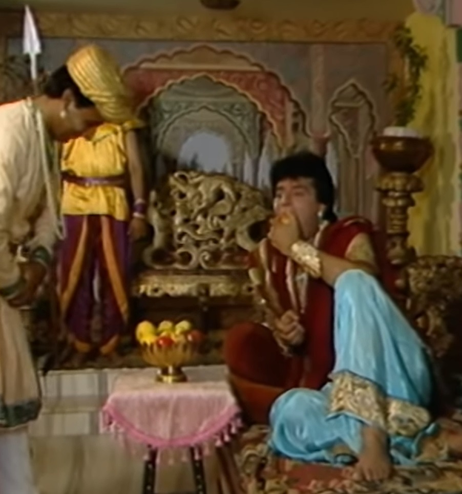
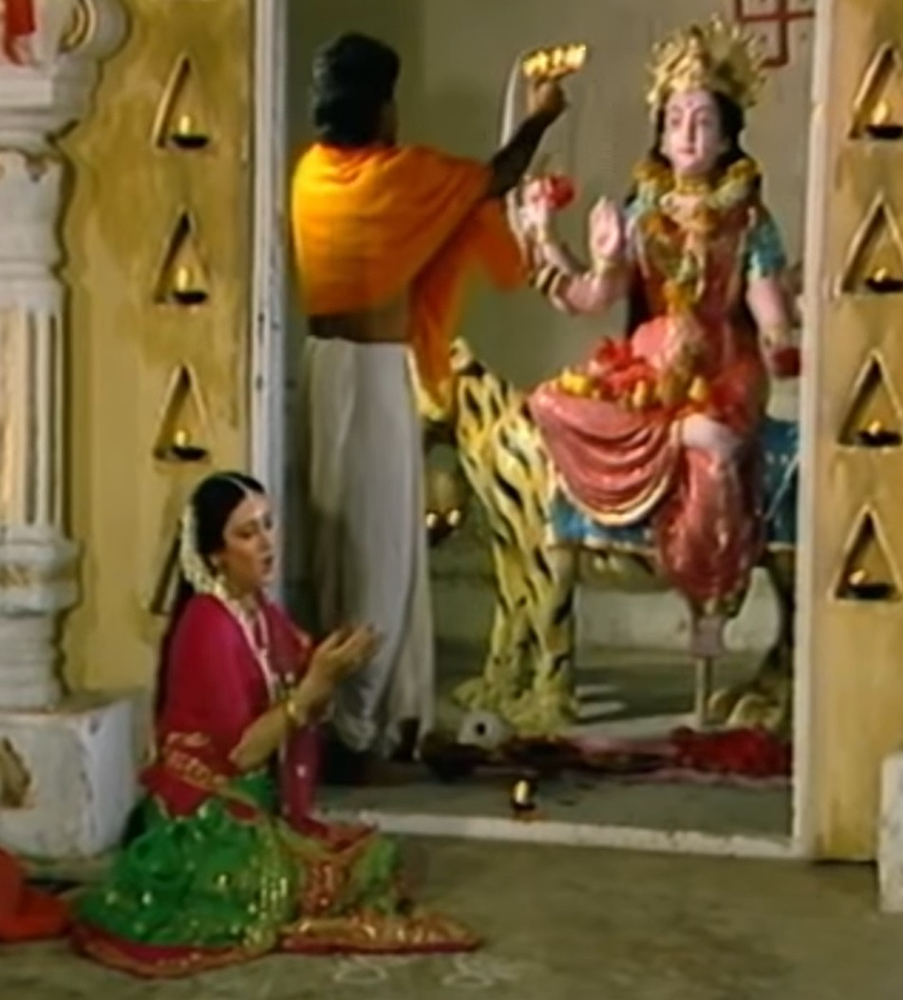
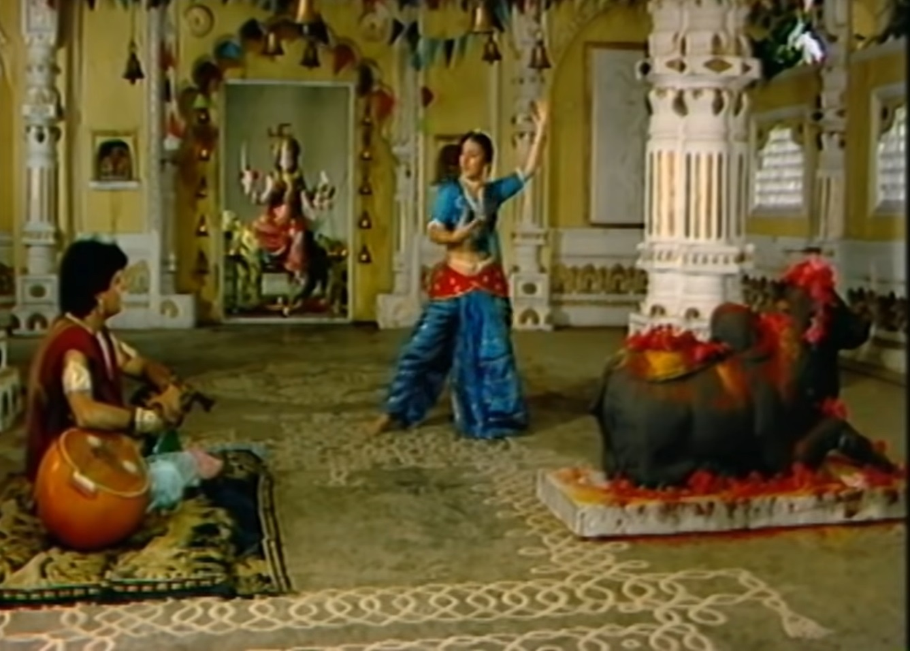
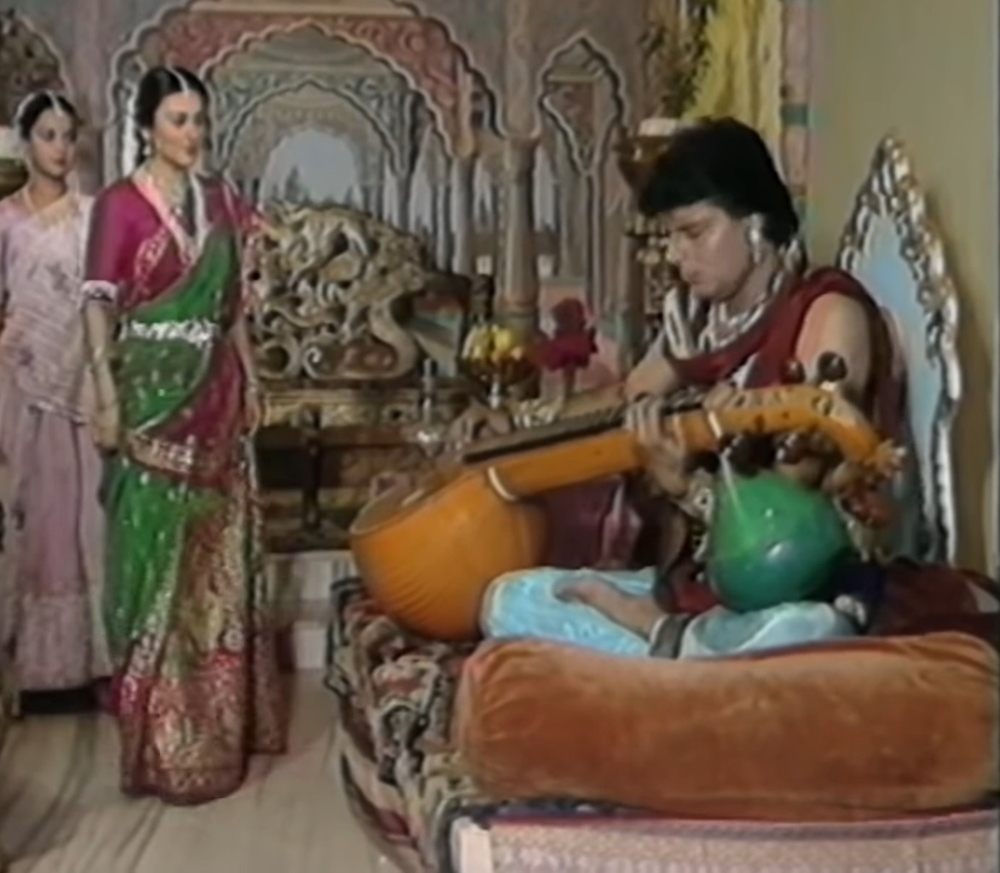
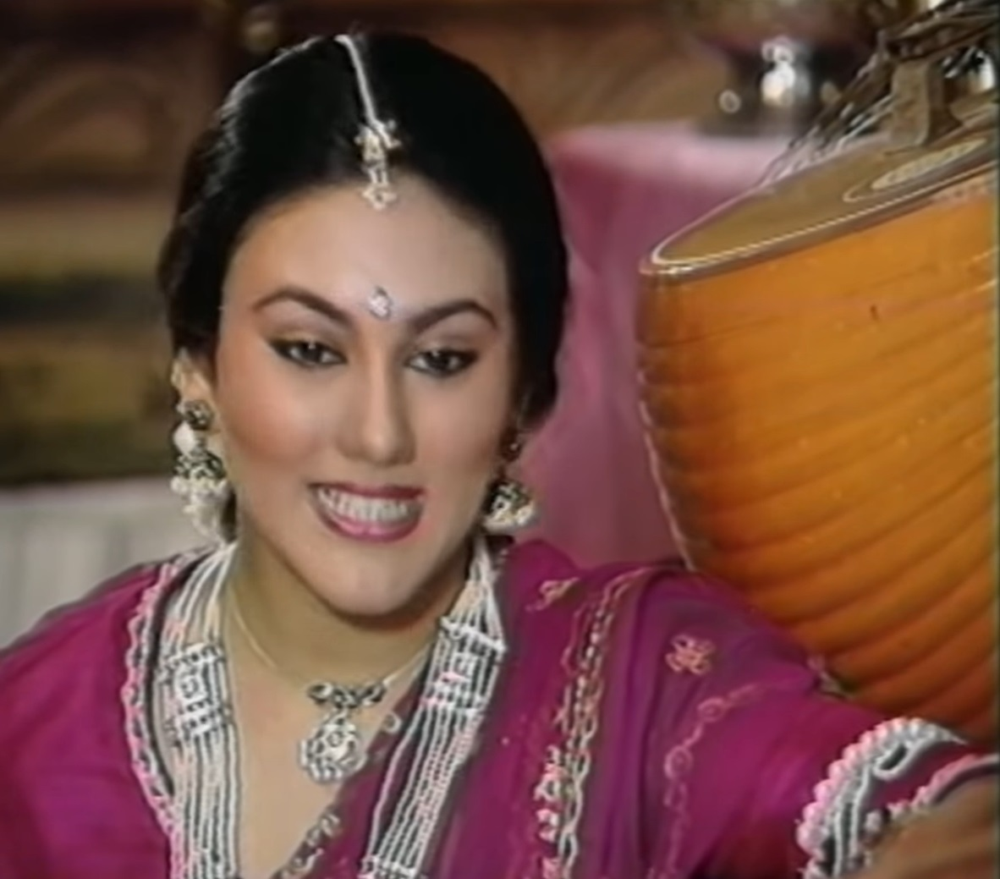
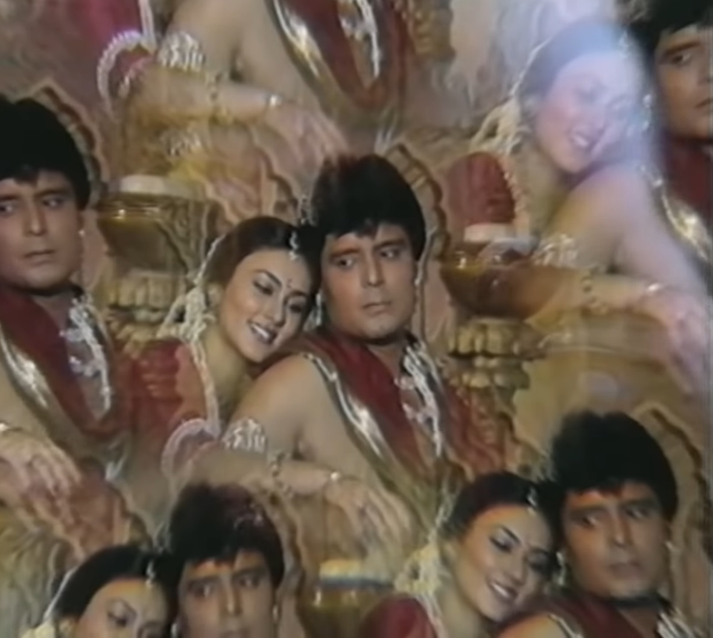

  
Betal makes Vikram listen to a new story again so that he can fulfill his condition. Could force him to speak. This time Betal Vikram was made the Prince of Chanderpur. Tells the story of Anandsen. Anandsen was sad about hunting. One day he When he goes hunting with the soldiers, he gets lost due to a storm. and becomes unconscious due to hitting his head on a stone. Anandsen from his kingdom Had gone out and comes within the limits of Avantipur. soldiers of Avantipur When he regains consciousness and takes him to the king, King Dharamveer of Avantipur tells about him. I listen to him and tell him that his father is his best friend and he is safe and sound. Will convey the news of the incident to his father. Raja Dharamveer Anandsen for a few days Makes him his guest. Anandsen enjoys the service, eats and sleeps. go. One day he hears singing coming from the temple so he goes to the temple. There he meets King Dharamveer's daughter Roopvati, seeing whom he becomes fascinated. Is. The king introduces both of them to each other. Thoughts of Anandsen Roopwati Gets lost in. When the prince feels like playing the veena, he asks for it. The servant asks for the Veena from Princess Roopvati and gives it to Prince Anandsen. Is. When Anandsen plays the veena, the prince hears its sweet music and comes to him. Comes. Anandsen reveals his love to Roopvati. Prince Anandsen asks King Dharamveer for his daughter's hand. to King Anandsen Says he can't accept their offer because he hasn't been there for a few days Her relationship with the prince of Sundar Nagar has already been decided and that promise Can't break. The king regretfully rejected Anandsen's proposal. Is. Prince Anandsen tells everything to Princess Roopvati, then the prince and she Didn't want to be away from others. Anandsen took the princess away with himself. When he talks about beauty, Rupavati agrees. The prince tells her to run away from there. Tells the time and wake up and takes from him the address of the horse trader Hari Baba. Goes to buy a horse. Gave horses to horse trader Hari Baba Anand Sen Looks like one was old and one was young. Price of young horse to businessman Anand Sen Shows 50 pieces and the old horse shows 100 pieces. prince the reason When the businessman asks, he tells that once the old horse runs, it will return to its place. But he will stop soon and wherever he sees this young horse, he will stop. Because he is afraid of water. When Anand Sen asks the reason for his fear of water, Hari Baba tells that once the great grandmother of this horse got scared of water and this quality This fear of water was passed on to his grandmother and his mother too. and now this Has also started being afraid of water. Anandsen stands there and thinks something and tells Hari Baba The old man buys the horse by paying 100 pieces. Anandsen without sitting on the horse He goes straight to his kingdom with Princess Roopvati and Roopvati is there. Remains waiting. Now Betal asks Vikram to tell the king that Why didn't Anandsen take Rupvati with him? Vikram tells Betal that Prince Anandsen passed the horse's great-grandmother's qualities from his grandmother to his mother. When he heard about the coming and the same qualities appeared in that horse, he understood. Gaya said that today Princess Roopvati has forgotten her father's respect and love and is with him. If she is ready to run away, then tomorrow if her daughter also does the same, then the blame will be on her. What will it take for him to save the honor of King Dharamveer alone? The state left.
  